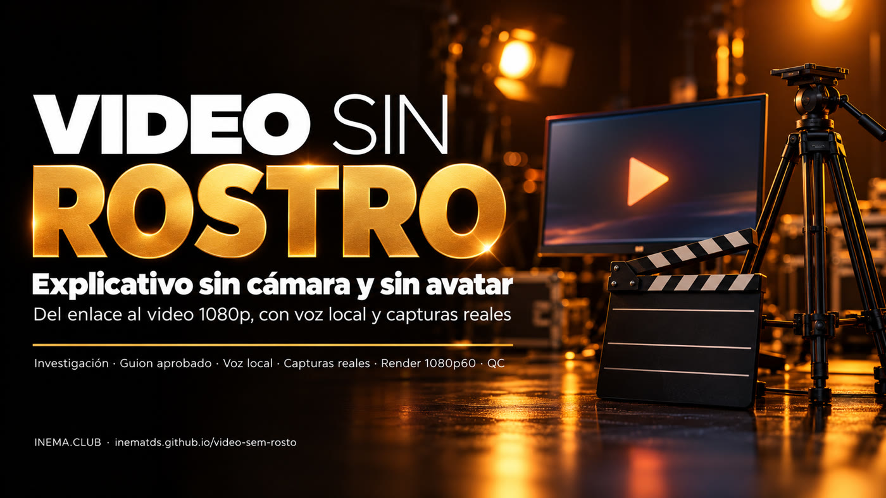
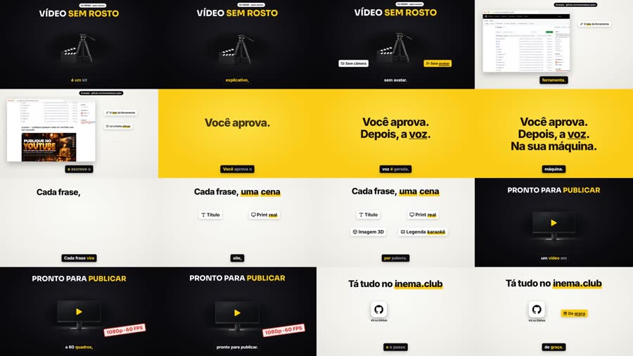
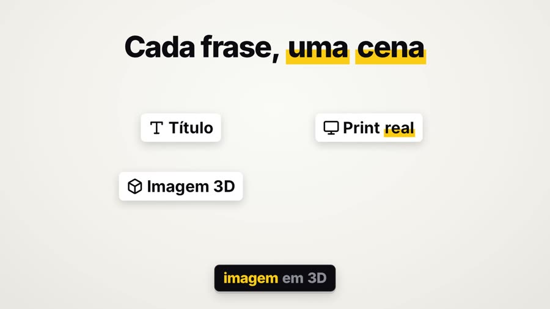

Tú pasas el enlace de una herramienta. El agente investiga, escribe el guion, tú lo apruebas, y cada frase se convierte en una escena con captura real, imagen 3D y subtítulos palabra por palabra.

video-sem-rosto es un kit (una "skill") que enseña a Claude Code a hacer videos explicativos en horizontal sin grabar nada: sin cámara, sin avatar. Sirve para quien quiere explicar una herramienta, un repositorio o una novedad en video sin aparecer y sin pagar un servicio de voz. La voz se genera en tu computadora con una voz clonada, y las escenas muestran la página real del sitio, imágenes 3D y subtítulos sincronizados. Para usarlo, necesitas Claude Code, ffmpeg, Python e inemavox (que hace la voz y la transcripción) funcionando en tu máquina.
Cada escena es una página HTML animada en el tiempo exacto del habla. Chromium avanza cuadro a cuadro y ffmpeg monta el video.
Chatterbox genera cada frase con la voz clonada; Whisper local la escucha, la compara con el guion y manda generar de nuevo la frase que salió mal. Ninguna API de pago.
El capture.py abre la página, encuentra el texto que cita la voz y devuelve su posición, para que el zoom y el anillo caigan exactamente ahí.
No se genera nada antes de que el guion esté aprobado. Al final, el qc.py verifica 1920x1080, 60 fps, bitrate, −14 LUFS y cuadros negros, y arma una hoja para revisar.
Voz, imágenes y capturas corren en paralelo. Las escenas se escriben leyendo el tiempo de cada palabra en el words.json.
reel (papel ↔ negro, chips, 3D), cinema (imagen real primero, letterbox) y ledger (notas de versión, contadores). Alterna entre videos.
Negro #0c0c10, papel claro, amarillo #FACC15, títulos en Sora y cuerpo en Inter, aplicados en los tres looks. FV_THEME=original vuelve a la paleta crema/naranja.
Solo la voz, a −14 LUFS, y una pista opcional baja. Sin whoosh en los cortes (FV_WHOOSH=1 lo activa, si quieres).
El setup.sh verifica todo y se detiene con el mensaje de lo que falta.
Motor de las escenas y codificación del video.
# Ubuntu sudo apt install python3-venv ffmpeg
Proyecto abierto de INEMA que trae el worker de Chatterbox y un venv con faster-whisper. El kit usa ambos por ruta (INEMAVOX_DIR cambia la ubicación).
git clone https://github.com/inematds/inemavox ~/projetos/inemavox cd ~/projetos/inemavox && python3 -m venv venv venv/bin/pip install faster-whisper soundfile numpy
Modelo abierto de voz que clona la voz a partir de un audio corto. Corre en un entorno conda propio (CHATTERBOX_PYTHON cambia la ruta).
# Miniconda (si no lo tienes): https://docs.anaconda.com/miniconda/ — se instala en ~/miniconda3 # otro lugar: export CHATTERBOX_PYTHON=.../envs/chatterbox/bin/python3 conda create -n chatterbox python=3.11 -y ~/miniconda3/envs/chatterbox/bin/pip install chatterbox-tts soundfile
10 segundos de habla limpia, sin música, en .wav 24 kHz mono. Grábala con el celular y conviértela:
ffmpeg -i gravacao.m4a -ss 2 -t 10 -ac 1 -ar 24000 ~/minha-voz.wav echo 'export FV_VOICE=~/minha-voz.wav' >> ~/.bashrc && source ~/.bashrc
Es quien sigue el SKILL.md: investiga, escribe el guion y las escenas, ejecuta los scripts.
claudeGenera las imágenes 3D con la suscripción de ChatGPT (sin API): npm i -g @openai/codex y codex login. Sin él: FV_IMG=flux si tienes un servidor flux2-klein local, o haz el video solo con capturas, logos e íconos.
codex loginLa voz y Whisper corren bastante más rápido en GPU; ambos pasan a CPU si es necesario.
nvidia-smiWhisper: modelo que transcribe habla; aquí escucha cada frase para medir si salió bien y marcar el tiempo de cada palabra. LUFS: medida de volumen percibido; −14 es el estándar de YouTube. Hoja de contacto (stills): una imagen con varios cuadros del video, para revisar todo de una vez. Look: el estilo visual del video — reel (predeterminado), cinema (imagen real a pantalla completa, franjas negras de cine) o ledger (aspecto de notas de versión); elige con Video(job, look="cinema"). flux2-klein: generador de imágenes que corre en local; el kit lo llama en localhost:8000 (FV_FLUX_URL) solo si tienes ese servidor.
En la 1.ª ejecución Whisper large-v3 (~3 GB) y Chatterbox descargan los pesos de los modelos. Si Playwright se queja de una biblioteca del sistema: sudo .venv/bin/python -m playwright install-deps chromium.
Usa TMPDIR=$(mktemp -d /tmp/fv.XXXX) delante del render y de la captura: Chromium aborta si la ruta temporal es demasiado larga.
Crea el .venv del proyecto (Playwright + Pillow), verifica voz y Whisper y enlaza la skill en ~/.claude/skills/video-sem-rosto.
git clone https://github.com/inematds/video-sem-rosto ~/projetos/video-sem-rosto cd ~/projetos/video-sem-rosto && bash setup.sh # tiene que terminar con SELFTEST PASS
El PROFILE.md guarda voz, llamada a la acción, visual y palabras prohibidas; la skill lo lee antes de cada video. Viene con el perfil de INEMA (llamada a inema.club, publicación con yt-pubx, avisos en el bot): cambia nombre, llamada, canal y reglas por los tuyos. Los pasos de publicación del SKILL.md que citan herramientas de INEMA son opcionales.
nano PROFILE.md # tu nombre, tu voz, tu llamada (~3:00 y al final), tu canal
El agente investiga la fuente oficial, escribe script.txt y el guion con tiempos, y se detiene esperando tu aprobación. Después de tu "ok", él mismo ejecuta los pasos 4 a 7; los comandos de abajo sirven para ejecutarlos a mano o entender lo que ocurre.
haz un video sin rostro sobre https://github.com/dono/projeto — unos 8 minutos, muéstrame el guion antes
Para ejecutar sin el agente, empieza por el ejemplo de ~40 s (trae la marca INEMA en el texto de las escenas: cámbiala en el job.py). El tts.py lee $P/script.txt y genera vo.mp3, words.json y vo_qc.json (similitud de cada frase).
P=~/videos/teste; mkdir -p $P/{img,cap} cp templates/exemplo_30s.py $P/job.py && cp templates/exemplo_30s.txt $P/script.txt python3 scripts/tts.py $P # usa FV_VOICE; FV_LANG=pt
c_ = fondo claro, d_ = oscuro; un objeto por imagen. La captura devuelve un .json con el recuadro de cada texto pedido.
python3 scripts/images.py $P/img d_clap="a film clapperboard beside an empty tripod" d_monitor="a widescreen monitor with a play button" TMPDIR=$(mktemp -d /tmp/fv.XXXX) .venv/bin/python scripts/capture.py https://github.com/inematds/yt-pubx $P/cap/gh.png "README"
El job.py del ejemplo usa img/d_clap.png, img/d_monitor.png y cap/gh.png (generados en el paso 5). Los tiempos de las escenas son los de la voz del ejemplo: con tu voz, ajusta los v.scene(inicio, fin, …) leyendo el words.json. Video largo: templates/job_full_template.py. Primero la hoja de escenas, después el render.
TMPDIR=$(mktemp -d /tmp/fv.XXXX) .venv/bin/python $P/job.py stills # out/stills.jpg TMPDIR=$(mktemp -d /tmp/fv.XXXX) .venv/bin/python $P/job.py # out/video-sem-rosto-teste.mp4
Verifica tamaño, fps, bitrate, volumen y cuadros negros; sale con error si algo reprueba y graba una hoja de 16 cuadros.
python3 scripts/qc.py $P/out/video-sem-rosto-teste.mp4
Voz local, tema INEMA, 1080p60, −14,3 LUFS. Descarga los dos en 1080p60 en la release 1.0.1.
Abajo: la hoja de contactos y un cuadro del ejemplo 1.

qc.py: papel ↔ negro, tarjeta amarilla, captura real, subtítulos karaoke.
El kit ya hace el video completo. Los próximos pasos son de integración con lo que INEMA ya usa.
script.txt, generar la voz en FV_LANG=en|es y reaprovechar las escenas.